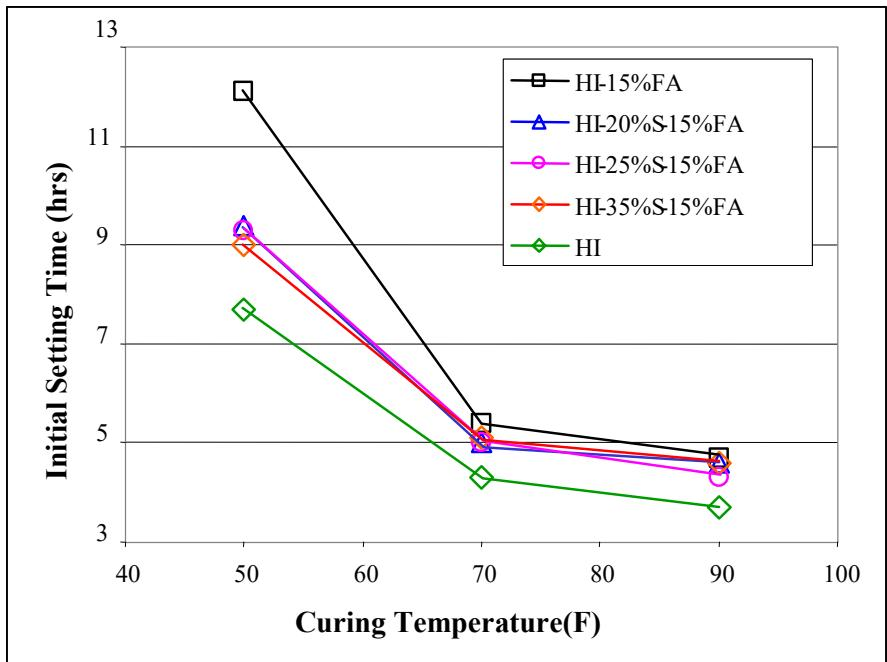
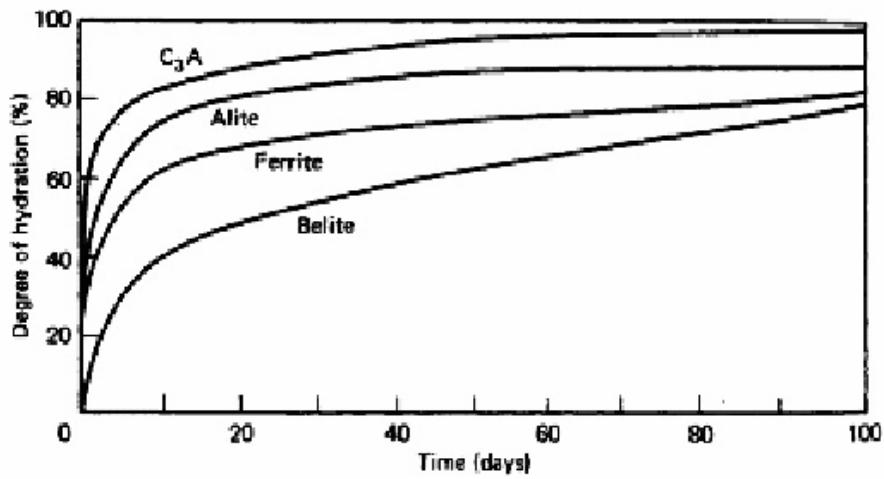
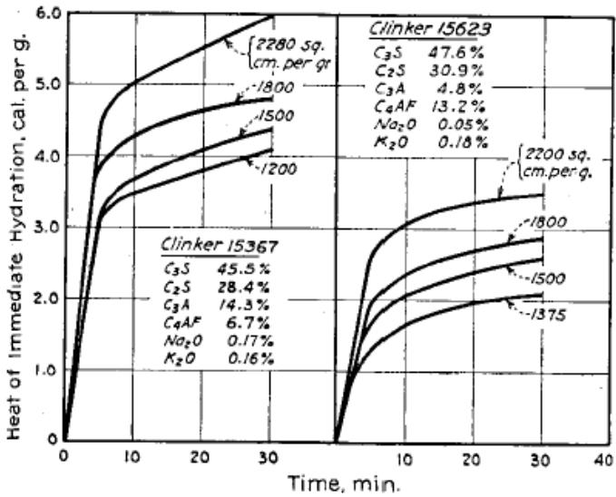
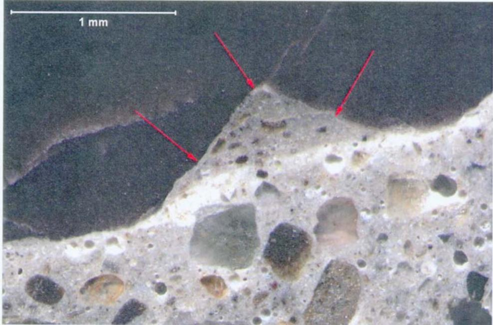
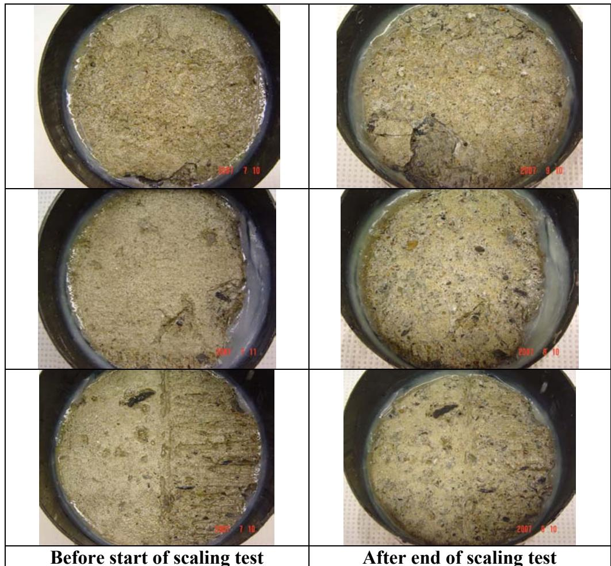
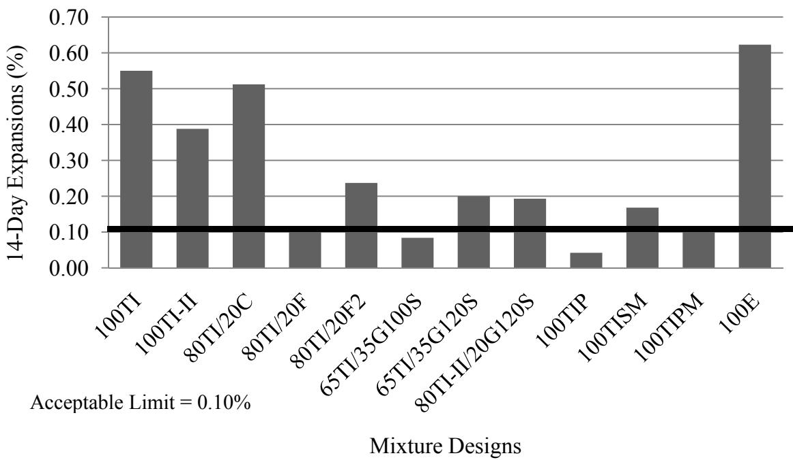
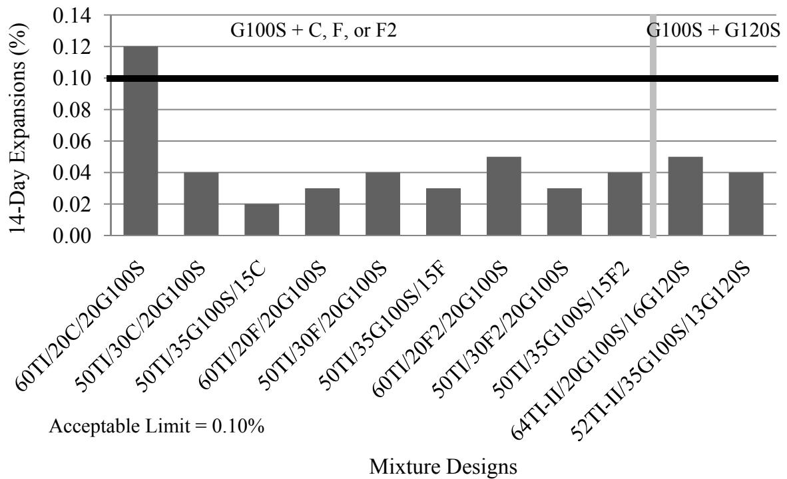
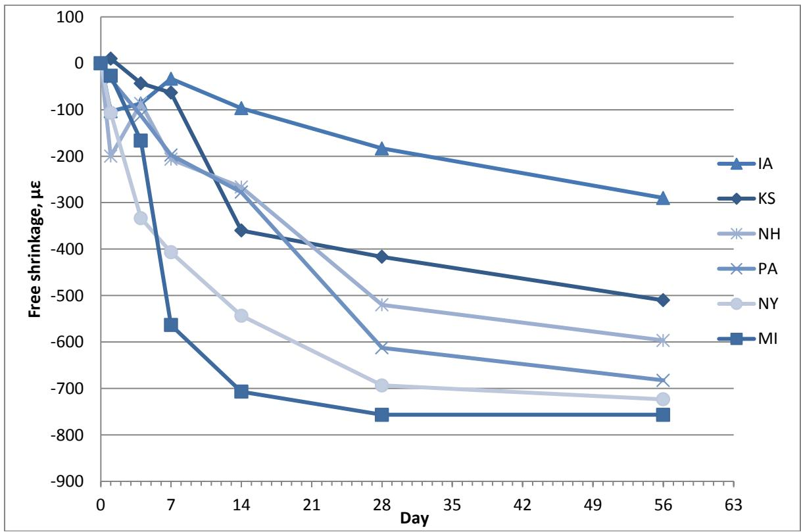
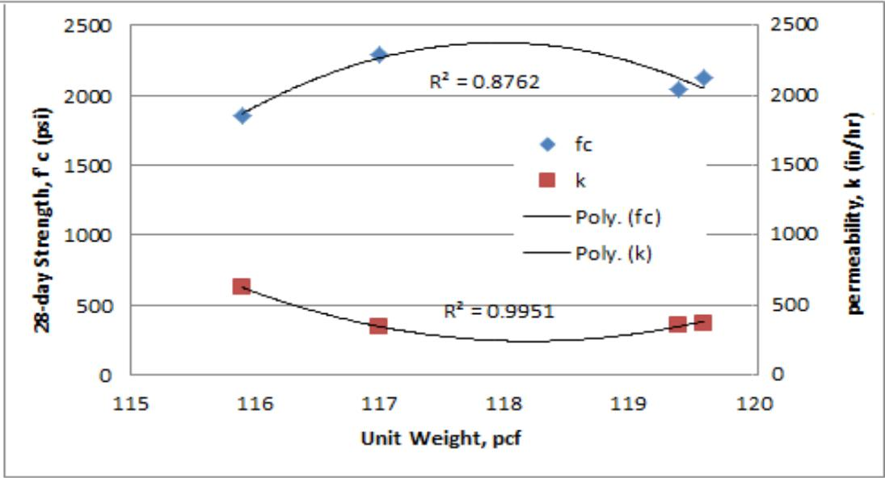

Blended Cement
Blended cement is a hydraulic binder produced by intimately mixing ordinary portland cement (OPC) with one or more Supplementary Cementitious Materials, such as fly ash, slag, or limestone [1]. As an instance of Cementitious Materials & Chemistry, this blending process allows for enhanced performance and sustainability in concrete mixtures by utilizing industrial by-products that contribute through hydraulic or pozzolanic activity [2]. In the context of Iowa pavement concrete, “blended cement” specifically refers to OPC interground with ground granulated blast-furnace slag (GGBFS) at 20%-35% replacement levels [1].
Sources (18)
Types in This Research
- Slag-blended cement — OPC + GGBFS only (also called blended cement in this study)
- Binary Cement — OPC + fly ash only
- Ternary Cement — OPC + fly ash + slag
The distinction between these categories is critical because slag and fly ash have different and sometimes opposing effects on water demand, set time, and strength development.
Fly ash replacement generally reduces water demand due to its fine, glassy, spherical particles, whereas slag replacement increases it; consequently, ternary cements combining both materials can achieve flowability comparable to ordinary portland cement concrete. [1]
Clinker type significantly influences set time in ternary systems: Holcim slag can reduce the extended set times caused by fly ash, while Lafarge slag consistently increases set time as supplementary cementitious material content rises. [1]
 Set time for Holcim cement [1]
Set time for Holcim cement [1]
Lowering curing temperature from 70°F to 50°F more than doubles concrete set times for both binary and ternary cements, whereas raising it to 90°F decreases set times by only about 10%–15%, indicating equal or less slump loss compared to ordinary portland cement in hot weather. [1]

Type I, binary, and ternary cements, respectively. The initial set time decreased 0.9, 0.8, and 1.1 hours for the concrete made with Lafarge Type I/II, binary, and ternary cements, respectively. Note that the set time drops of binary/ternary cement concrete are comparable with or less than that of OPC concrete. This indicates that binary/ternary cement concrete will have equal or less slump loss to/than OPC concrete under a hot weather. It is of great benefit to use SCM concrete for hot weather concreting. (a) Holcim cement [1]At high curing temperatures (90°F), ternary cement mortars achieve strength comparable to binary cements within approximately seven days, with accelerated pozzolanic reactions yielding higher strengths by fourteen days. [1]
 Mortars made with Lafarge cements at 3, 7, and 14 days Figure 3.20. Effect of curing temperature on mortar strength at given ages [1]
Mortars made with Lafarge cements at 3, 7, and 14 days Figure 3.20. Effect of curing temperature on mortar strength at given ages [1]
Maximum heat of hydration decreases as supplementary cementitious material replacement levels increase, resulting in a lower risk of thermal cracking compared to ordinary portland cement concrete. [1]
Datum temperature and activation energy values increase with higher fly ash and slag replacement levels, though using adjusted datum temperatures does not affect pavement traffic opening time if proper strength-time-temperature correlations are maintained. [1]
 Effect of slag replacements on datum temperature and activation energy [1]
Effect of slag replacements on datum temperature and activation energy [1]
Early-age cracking risk is minimal under average summer conditions but increases during spring or fall when thermal stresses develop closer to the concrete’s developing strength. [1]
 Concrete strength vs. critical stress for summer conditions [1]
Concrete strength vs. critical stress for summer conditions [1]
Slag is classified into three grades (80, 100, and 120) based on the compressive strength of mortar cubes in a slag activity index test, where higher grades indicate more rapid strength gain. [2]
Silica fume is typically used to replace about 5% to 15% of cement in high-performance concrete and approximately 4% to 10% in pavement concrete. [2]
 X-ray diffactogram of silica fume (note the trace of SiC in the sample) [2]
X-ray diffactogram of silica fume (note the trace of SiC in the sample) [2]
Slag replacement levels can vary from approximately 20% to more than 60%, with lower ranges used when setting time or hardening constraints limit the mix design and higher ranges employed for alkali-silica reaction or sulfate resistance. [2]
The tremendous surface area of silica fume often necessitates the use of high-range water reducers, and its carbon particle content can cause air-entrainment issues in concrete. [2]
The predominant sulfate phase in blended cement can be bassanite rather than gypsum, which may cause severe false set in laboratory mixtures but is less pronounced when combined with fly ash. [3]
 Illustration of how fly ash can influence the false set behavior of a mixture [3]
Illustration of how fly ash can influence the false set behavior of a mixture [3]
Field studies indicate that mortar set times for Type I(SM) blended cements with Class C fly ash vary by time of day, with early morning placements setting over an hour slower than afternoon placements. [3]
Increasing the SO3 content in blended cement reduces the heat liberated within the first 30 minutes of hydration by saturating the pore solution more quickly and retarding the reaction of tricalcium aluminate (C3A). [4]

b. Hydration rate of cement compounds—in a type I cement paste (adapted from Mindess and Young 1981) [4]The average Blaine fineness of modern blended cement typically ranges from 3,000 to 5,000 cm2/g, and a higher specific surface area increases the early-age rate of hydration due to greater contact area with water. [4]

Heat of hydration with specific surface varied (adapted from Lerch et al. 1946) [4]Complete hydration of blended cement paste generally requires a water/cement ratio of about 0.4, as the volume of hydration products is less than the total volume of the reacted cement and water. [4]
High initial curing temperatures accelerate early-age hydration but can form a denser ‘shell’ of hydration products on particle surfaces that delays later-stage hydration, whereas lower temperatures result in higher overall hydration at later ages. [4]
 Effect of curing temperature on hydration (adapted from Escalante-Garcia et al. 2000) [4]
Effect of curing temperature on hydration (adapted from Escalante-Garcia et al. 2000) [4]
Slag-blended cement exhibits two distinct heat generation peaks: an initial peak from cement hydration occurring at the same time as pure OPC, and a second peak caused by the independent slag reaction. [4]
 Effect of slag on hydration (adapted from Kishi and Maekawa 1994) [4]
Effect of slag on hydration (adapted from Kishi and Maekawa 1994) [4]
The setting time of slag-blended cement is delayed by ten to twenty minutes for every 10% addition of slag, although finely ground slag can accelerate the peak of cement hydration by consuming Ca2+ in the liquid phase. [4]
Blended cements containing Class F fly ash, ground granulated blast-furnace slag (GGBFS), and silica fume are effective in mitigating alkali-silica reaction (ASR) by reducing the total alkali loading available to react with reactive aggregates. Using ternary concrete mixes allows for higher SCM mitigation without the risk associated with high volumes of a single supplementary cementitious material. [5]
 ASR filled cracks and rims [5]
ASR filled cracks and rims [5]
The use of blended cement provides flexibility for contractors to vary the total supplementary cementitious material content in the mix to meet specific project requirements, such as mitigating expansive mechanisms caused by reactive aggregates like chert. This approach is particularly beneficial when high volumes of a single SCM are needed to stop destructive ASR forces. [5]
Ternary mixtures containing Type I cement with Class F fly ash and GGBFS grade 100 slag exhibit a mean shrinkage reduction of 15% compared to plain Type I cement, though specific combinations like 50TI/30F/20G100S can show slightly higher shrinkage than the control. [6]
The sulfate resistance of blended cement systems is evaluated using ASTM C1012, which requires a minimum exposure period of six months for meaningful data collection, though early three-month results often lack sufficient detail for definitive recommendations. [6]
Statistical analysis of ternary mixtures reveals a poor correlation coefficient (approximately 0.38) between shrinkage and variables such as cement chemistry, fly ash calcium oxide content, GGBFS fineness, metakaolin, and silica fume contents. [6]
The initial set time of blended cement is defined as the point when a tested specimen reaches 500 psi (3.5 MPa) penetration resistance, while final setting occurs at 4000 psi (27.6 MPa). [7]
The peak of the hydration curve is postponed by approximately three hours when the water-to-cement ratio increases from 0.35 to 0.5. [7]
For mortar with 40% fly ash replacement, lowering the curing temperature from 40°C to 10°C increases initial set time by 6.3 hours and final set time by 9.3 hours. [7]
Type III blended cement exhibits higher heat index values (A1 and A3) and lower set times compared to Type I and ISM cements, indicating faster early-age hydration. [7]
 Effect of cement type and temperature on set times [7]
Effect of cement type and temperature on set times [7]
Field evaluations of concrete pavements containing slag cement indicate that construction-related issues, such as retempering and higher-than-expected water-cementitious material ratios, often play a more significant role in surface scaling than the specific amount of slag used in the mixture. [8]

Example of retempering noted via petrographic examination [8]Rapid chloride permeability tests on field cores containing slag cement show charge passed values ranging from 590 to 1,580 coulombs, with diffusion coefficients estimated between 5.6E-12 m²/s and 1.4E-13 m²/s. [8]
 Example of chloride profile test results (before and after scaling tests) [8]
Example of chloride profile test results (before and after scaling tests) [8]
In laboratory scaling tests following ASTM C672, concrete mixtures containing portland cement, 20% slag, and 6% silica fume exhibited mass loss values exceeding the 1.5 lbs/yd² threshold. [8]

Photographs of the three scaling specimens from Site 13 (before and after test) [8]Bridge deck cores containing slag cement tend to lose more mass during laboratory scaling tests compared to pavement cores extracted from similar environments. [8]
Concrete made with Type IP blended cement containing Class F fly ash can achieve freeze-thaw durability without air entrainment if it reaches a high compressive strength of approximately 82 MPa (11,880 psi) and exhibits low permeability. This allows for the elimination of air-entraining agents in specific high-performance mixtures where lower water-to-binder ratios are utilized. [9]
The effectiveness of air entrainment for freeze-thaw resistance depends primarily on the air void structure rather than the specific type of blended cementitious material used. To ensure durability, concrete requires an air content of 6% or greater and a spacing factor of 0.28 mm or less when measured using AVA equipment. [9]
 Durability factor as a function of spacing factor, measured using the RapidAir [9]
Durability factor as a function of spacing factor, measured using the RapidAir [9]
Blended cement mixtures containing Class F fly ash can maintain stable air entrainment with dosages ranging from 5.3% to 8.2%, whereas Type IP blended cements often require increased admixture dosages as the water-to-binder ratio decreases or cementitious content increases to achieve similar stability. [9]
In pervious concrete mixtures containing supplementary cementitious materials (SCMs), combinations with at least 25% slag replacement demonstrate higher seven-day tensile strengths and compressive strength values comparable to those of 100% portland cement mixtures, despite generally slower strength development rates. [10]
Limestone blended cement exhibits significantly higher alkali-silica reaction (ASR) expansion than other control mixtures, reaching 0.62% compared to 0.55% for 100% Type I cement in ASTM C1567 testing. [11]
Grade 120 GGBFS releases alkalis faster into pore water due to its higher reactivity than Grade 100 GGBFS, which can lead to increased ASR expansion in ternary mixtures containing Class C fly ash. [11]
Class C fly ash contains a high CaO content (27.18%) and elevated sulfur oxide levels that require higher replacement percentages to effectively mitigate alkali-silica reaction compared to Class F alternatives. [11]

ASTM C1567 ASR expansion for control mixtures [11]The addition of Class C fly ash increases mortar final set time by up to 189 minutes and initial set by 96 minutes due to its high sulfur oxide content (2.70%) creating oversulfonated mixtures. [11]
Ternary mixtures combining Class C fly ash with Class F fly ash can experience final setting time increases up to 402 minutes compared to pure Type I control due to reduced early-age cementitious properties and unoptimized soluble sulfates. [11]
Class F2 fly ash exhibits a slightly higher average ASR expansion (0.044%) than standard Class F fly ash due to its elevated calcium oxide and alkali content. [11]
 ASTM C1567 ASR expansion for mixtures containing Class F fly ash blended with Class C or F2 fly ash or Grade 100 or 120 GGBFS [11]
ASTM C1567 ASR expansion for mixtures containing Class F fly ash blended with Class C or F2 fly ash or Grade 100 or 120 GGBFS [11]
Grade 100 GGBFS blended with Class C fly ash at 30% replacement achieves a low ASR expansion of only 0.04%, demonstrating superior mitigation compared to lower replacement levels. [11]

shows the 14 day ASR expansions for mixtures containing Grade 100 GGBFS blended with Class C, F, or F2 fly ash or Grade 120 GGBFS. Figure 13 shows the 14 day expansions for mixtures containing Grade 100 GGBFS blended with silica fume, metakaolin, or blended cement. Figure 12. ASTM C1567 ASR expansion for mixtures containing Grade 100 GGBFS blended with Class C, F, or F2 fly ash or 120 GGBFS [11]Class F2 fly ash increases mortar final set time by 121 minutes and initial set by 95 minutes at 20% replacement, reflecting its intermediate sulfur oxide ratio (2.83%) compared to Class C and standard Class F ashes. [11]
Standard laboratory scaling tests such as ASTM C672 are often overly aggressive for blended cements containing slag, frequently yielding misleading data that does not correlate with field performance due to the extended setting times and slower property development of high-volume SCM mixtures. Consequently, alternative test methods like the Quebec Ministry of Transportation BNQ NQ 2621-900 have been proposed as they better mimic actual field scaling resistance for concretes with slag replacement levels exceeding 25 percent. [12]
 ASTM C672 exposure for Mix #13 (50%LA 50%SG120 0.42w/c) at 25 cycles where coarser sized pieces of scale were observed [12]
ASTM C672 exposure for Mix #13 (50%LA 50%SG120 0.42w/c) at 25 cycles where coarser sized pieces of scale were observed [12]
Low-alkali (LA) blended cements consistently develop higher compressive strengths than high-alkali (HA) counterparts regardless of slag grade or content; specifically, LA cement combined with Grade 100 slag achieves approximately 10 MPa greater strength at 56 days compared to identical HA mixes. [12]
Increasing the water-to-cementitious material ratio from 0.42 to 0.38 in blended cement mixtures results in a significant increase in 56-day compressive strength, reaching approximately 60 MPa. [12]
The heat signature of concrete mixtures containing Grade 120 slag cement is significantly higher than those containing Grade 100 slag cement, while the influence of silica fume replacement (3 or 5 percent) on the heat signature remains negligible. [13]
 Temperature data for ternary mixtures with 35% slag cement [13]
Temperature data for ternary mixtures with 35% slag cement [13]
When Type I/II Portland cement is blended with supplementary materials, shrinkage can be higher than a control mixture, whereas Type IP and Type PM cements yield both higher and lower shrinkage results depending on the specific combination. [13]

Free shrinkage (after seven days of moist curing) of prisms cast on site with job mixture [13]Class F fly ash is highly effective at mitigating sulfate expansion in ternary systems, whereas Class C fly ash mixtures require specific testing before use due to unpredictable performance trends. [13]
In high-alkali cement systems, the use of 35% slag cement results in lower early strengths compared to other dosages, while decreasing the slag dosage from 35% to 25% improves early strength gain and reduces the risk of early cracking. [13]
Field surveys indicate that construction-related issues, such as improper finishing or curing practices, often play a more significant role in surface scaling than the specific amount of slag cement used in the mixture. [14]
Standard laboratory scaling tests based on ASTM C672 are often overly aggressive for blended cements containing slag, frequently yielding misleading data that does not correlate with field performance due to the extended setting times and slower property development of high-volume SCM mixtures. [14]
 Comparison between data from ASTM C 672 and new test methods for standard curing [14]
Comparison between data from ASTM C 672 and new test methods for standard curing [14]
- Blended Cement — OPC interground or blended with one or more SCMs
Energetically Modified Cement
Energetically modified cement (EMC) utilizes intensive grinding and activation to create submicrocracks, microdefects, and dislocations on particle surfaces, which allows water to penetrate deeper into the particles and activates inert fillers like fine quartz sand without using additives. This process enables a 10 percent reduction in the water-cement ratio compared to conventional blended cements containing 20–40 percent fly ash, resulting in higher long-term strength and slightly improved sulfate resistance. [15]
Photocatalytic Cement
Cements containing titanium dioxide function as photocatalysts that remove volatile organic compounds (VOCs) from the atmosphere by converting them into carbon dioxide, thereby reducing urban smog when used in applications like concrete pavement. This technology offers a method to eliminate pollutants in urban areas while potentially improving air quality through the interaction of vehicle emissions with the pavement surface. [15]
Pervious Concrete Applications
In pervious concrete applications, blended cement mixtures containing slag exhibit significantly higher water permeability (up to 642 inches per hour) and lower unit weight compared to those incorporating fly ash or limestone powder replacements. [16]

Unit weight, strength, and permeability of pervious concrete mixtures [16]Specific surface area measurements using a RapidAir microscope camera can capture smaller voids that flatbed scanner methods miss, though the latter may falsely identify background aggregate particles as large voids. [16]
Fly ash and limestone powder blended cements demonstrate superior pollutant attenuation capabilities in pervious concrete systems, removing approximately 30% of naphthalene from influent water compared to only 10% removal by pure Portland cement. [16]
Slag-blended pervious concrete mixtures display lower workability than pure Portland cement or fly ash blends due to slag’s high specific surface value (247 yd²/lb) causing increased water adsorption onto fine particle surfaces. [16]
Joint Durability and Sealer Interactions
Penetrating sealers applied to the vertically sawn faces of concrete joints can reduce the potential for oxychloride formation by creating a hydrophobic layer that limits calcium chloride intrusion into the cement paste. [17]
The application of penetrating sealers can alter the microstructural response to freeze-thaw cycles by limiting the intrusion of deicing salts, which otherwise accelerates hydration of unhydrated fly ash particles and promotes the formation of large platy oxychloride crystals in voids. [17]
Air permeability tests are not reliable for characterizing the performance of concretes treated with sealers because they evaluate gas movement rather than liquid movement, making desaturation tests a more suitable alternative for assessing moisture exchange. [17]
Performance-Enhanced Mixtures
The PEM approach utilizes optimized aggregate gradations to reduce paste volume below historical minimums, which decreases shrinkage potential and CO2 emissions while maintaining or improving mixture workability. [18]
AASHTO R 101-22 recommends limiting the total paste volume in concrete mixtures to no more than 25% of the total concrete volume. [18]
Unrestrained shrinkage testing per AASHTO T 160 assesses drying shrinkage characteristics by measuring length change in de-molded prisms, with a prescriptive limit of less than 420 microstrain at 28 days. [18]
The VKelly Test evaluates workability by measuring the rate of penetration of a Kelly ball equipped with a vibrator, assessing both fluidization under vibration and stiffness after vibration passes. [18]
See also
References
- K. Wang and Z. Ge, "Evaluating Properties of Blended Cements for Concrete Pavements," Department of Civil, Construction and Environmental Engineering, Iowa State University, Ames, IA, 2003. [Online]. Available: https://www.intrans.iastate.edu/wp-content/uploads/2018/03/blended_cements-1.pdf
- S. Schlorholtz, "Development of Performance Properties of Ternary Mixes: Scoping Study (Phase 1)," Center for Portland Cement Concrete Pavement Technology, Iowa State University, Ames, IA, Rep. DTFH61-01-X-00042 (Project 13), 2004. [Online]. Available: https://www.cptechcenter.org/wp-content/uploads/2018/03/ternary_mixes.pdf
- S. Schlorholtz, K. Wang, J. Hu, and S. Zhang, "Materials and Mix Optimization Procedures for PCC Pavements," CTRE, Iowa State University, Ames, IA, Rep. TR-484, 2006. [Online]. Available: https://www.intrans.iastate.edu/wp-content/uploads/2018/03/mco-final.pdf
- K. Wang, Z. Ge, J. Grove, J. M. Ruiz, and R. Rasmussen, "Developing a Simple and Rapid Test for Monitoring the Heat Evolution of Concrete Mixtures (Phase 3)," CTRE, Iowa State University, Ames, IA, Rep. FHWA Project 17 (Phase I), 2006. [Online]. Available: https://www.intrans.iastate.edu/wp-content/uploads/2018/03/CalorimeterReportPhaseIII.pdf
- J. Grove, F. Bektas, and H. Gieselman, "Southeast Michigan Local Road Concrete Pavement Durability Study," National Concrete Pavement Technology Center, Ames, IA, 2006. [Online]. Available: https://www.cptechcenter.org/wp-content/uploads/2018/03/mi_pavement_durability.pdf
- P. Tikalsky, V. Schaefer, K. Wang, B. Scheetz, T. Rupnow, A. St. Clair, M. Siddiqi, and S. Marquez, "Development of Performance Properties of Ternary Mixes, Phase 1," Center for Transportation Research and Education, Ames, IA, Rep. TPF-5(117), 2007. [Online]. Available: https://www.intrans.iastate.edu/research/completed/development-of-performance-properties-of-ternary-mixes-phase-1/
- K. Wang, Z. Ge, J. Grove, J. M. Ruiz, R. Rasmussen, and T. Ferragut, "Simple and Rapid Test for Monitoring the Heat Evolution of Concrete Mixtures, Phase 2," Center for Transportation Research and Education, Ames, IA, 2007. [Online]. Available: https://www.intrans.iastate.edu/wp-content/uploads/2018/03/calorimeter.pdf
- S. Schlorholtz and R. D. Hooton, "Deicer Scaling Resistance ... Containing Slag Cement, Phase 1: Site Selection and Analysis of Field Cores," National Concrete Pavement Technology Center, Ames, IA, Rep. TPF-5(100), 2008. [Online]. Available: https://www.cptechcenter.org/wp-content/uploads/2018/03/schlorholtz_deicing_phase1.pdf
- K. Wang, G. Lomboy, and R. Steffes, "Investigation into Freezing-Thawing Durability of Low-Permeability Concrete with and without Air Entraining Agent," National Concrete Pavement Technology Center, Ames, IA, 2009. [Online]. Available: https://www.intrans.iastate.edu/wp-content/uploads/2018/03/low-permeability-concrete.pdf
- V. R. Schaefer and J. T. Kevern, "An Integrated Study of Pervious Concrete Mixture Design for Wearing Course Applications," National Concrete Pavement Technology Center, Ames, IA, 2011. [Online]. Available: https://www.intrans.iastate.edu/wp-content/uploads/2018/03/pervious_overlay_report_w_cvr.pdf
- P. Tikalsky, P. Taylor, S. Hanson, and P. Ghosh, "Development of Performance Properties of Ternary Mixtures: Laboratory Study on Concrete," National Concrete Pavement Technology Center, Ames, IA, Rep. TPF-5(117), 2011. [Online]. Available: https://www.intrans.iastate.edu/research/completed/development-of-performance-properties-of-ternary-mixtures-laboratory-study-on-concrete/
- R. D. Hooton and D. Vassilev, "Deicer Scaling Resistance of Concrete Mixtures Containing Slag Cement, Phase 2," National Concrete Pavement Technology Center, Ames, IA, Rep. TPF-5(100), 2012. [Online]. Available: https://www.intrans.iastate.edu/research/completed/deicer-scaling-resistance-of-concrete-pavements-bridge-decks-and-other-structures-containing-slag-cement-phase-2-evaluation-of-different-laboratory-scaling-test-methods/
- P. Taylor, P. Tikalsky, K. Wang, G. Fick, and X. Wang, "Development of Performance Properties of Ternary Mixtures: Field Demonstrations and Project Summary," National Concrete Pavement Technology Center, Ames, IA, Rep. TPF-5(117), 2012. [Online]. Available: https://www.intrans.iastate.edu/wp-content/uploads/2018/03/ternary_final_w_cvr.pdf
- P. Taylor and X. Wang, "Deicer Scaling Resistance of Concrete Mixtures Containing Slag Cement, Phase 3," National Concrete Pavement Technology Center, Ames, IA, Rep. TPF-5(100), 2014. [Online]. Available: https://www.intrans.iastate.edu/wp-content/uploads/2018/03/deicer_scaling_w_cvr.pdf
- D. Harrington, R. Rasmussen, D. Merritt, T. Cackler, and P. Taylor, "Long-Term Plan for Concrete Pavement Research and Technology—The Concrete Pavement Road Map (Second Generation): Volume II, Tracks (FHWA-HRT-11-070)," National Center for Concrete Pavement Technology, Iowa State University, Ames, IA, 2012. [Online]. Available: https://www.fhwa.dot.gov/publications/research/infrastructure/pavements/pccp/11070/11070.pdf
- S. K. Ong, K. Wang, Y. Ling, and G. Shi, "Pervious Concrete Physical Characteristics and Effectiveness in Stormwater Pollution Reduction," Institute for Transportation, Ames, IA, Rep. DTRT13-G-UTC37, 2016. [Online]. Available: https://www.intrans.iastate.edu/wp-content/uploads/2018/03/pervious_concrete_in_stormwater_pollution_reduction_w_cvr.pdf
- J. T. Kevern, G. Adil, P. Taylor, S. Sadati, and K. Wang, "Evaluation of Penetrating Sealers for Concrete," National Concrete Pavement Technology Center, Iowa State University, Ames, IA, Rep. TR-765, 2022. [Online]. Available: https://www.intrans.iastate.edu/wp-content/uploads/2022/06/concrete_penetrating_sealers_eval_w_cvr.pdf
- J. Gross, J. Weiss, T. Ley, P. Taylor, N. Weitzel, T. Van Dam, G. Smith, and C. Jones, "Performance-Engineered Concrete Paving Mixtures," National Concrete Pavement Technology Center, Iowa State University, Ames, IA, Rep. TPF-5(368), 2022. [Online]. Available: https://www.intrans.iastate.edu/wp-content/uploads/2023/04/performance-engineered_concrete_paving_mixtures_w_cvr.pdf
Feedback on this page